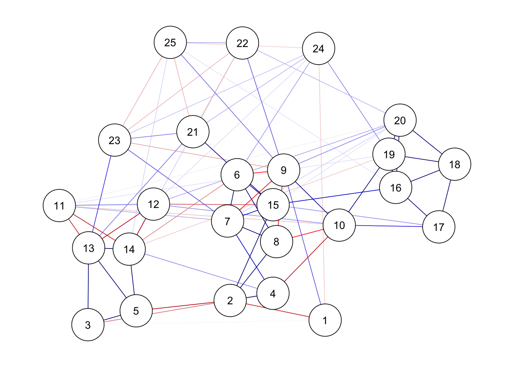

# 必要なパッケージがなければインストールします
if (!require("pacman")) {
install.packages("pacman", dependencies = TRUE)
}
# 読み込み
pacman::p_load(
"tidyverse", "qgraph", "psychonetrics",
"psych", "GPArotation", "corrplot"
)心理ネットワーク分析をやってみよう
ライブラリとサンプルデータの読み込み
ネットワーク分析にqgraphパッケージ，やサンプルデータのあるpsychパッケージその他をご準備ください。
データセットの確認
psychパッケージに入っているサンプルデータ，bfiを利用します。これは25項目からなる性格検査のBigFiveについての，2800人分のデータセットです。
bfi <- bfi[, 1:25]
# データセットの一部確認
head(bfi) A1 A2 A3 A4 A5 C1 C2 C3 C4 C5 E1 E2 E3 E4 E5 N1 N2 N3 N4 N5 O1 O2 O3 O4
61617 2 4 3 4 4 2 3 3 4 4 3 3 3 4 4 3 4 2 2 3 3 6 3 4
61618 2 4 5 2 5 5 4 4 3 4 1 1 6 4 3 3 3 3 5 5 4 2 4 3
61620 5 4 5 4 4 4 5 4 2 5 2 4 4 4 5 4 5 4 2 3 4 2 5 5
61621 4 4 6 5 5 4 4 3 5 5 5 3 4 4 4 2 5 2 4 1 3 3 4 3
61622 2 3 3 4 5 4 4 5 3 2 2 2 5 4 5 2 3 4 4 3 3 3 4 3
61623 6 6 5 6 5 6 6 6 1 3 2 1 6 5 6 3 5 2 2 3 4 3 5 6
O5
61617 3
61618 3
61620 2
61621 5
61622 3
61623 1項目の頭文字は性格の因子を表しています。
- N:情緒不安定性
- A:調和性
- E:外向性
- O:開放性
- C:誠実性
個々の項目については，?bfiで確認してください。
表線形
相関行列
cor_matrix <- cor(bfi, use = "complete.obs")
cor_matrix A1 A2 A3 A4 A5 C1
A1 1.000000000 -0.35090545 -0.273636113 -0.15675358 -0.192697601 0.01469773
A2 -0.350905455 1.00000000 0.503041094 0.35085621 0.397400236 0.10298310
A3 -0.273636113 0.50304109 1.000000000 0.38491762 0.515678702 0.11421112
A4 -0.156753579 0.35085621 0.384917618 1.00000000 0.325644217 0.09481253
A5 -0.192697601 0.39740024 0.515678702 0.32564422 1.000000000 0.13469202
C1 0.014697735 0.10298310 0.114211122 0.09481253 0.134692020 1.00000000
C2 0.012918376 0.12957363 0.146510834 0.22645377 0.116862660 0.43822302
C3 -0.020586716 0.18881795 0.129391202 0.13306473 0.130819762 0.31726974
C4 0.115073752 -0.14629498 -0.121115599 -0.17227081 -0.125530600 -0.36249078
C5 0.038292968 -0.12110614 -0.153811477 -0.24967547 -0.167036345 -0.26107942
E1 0.107178488 -0.22228008 -0.210365517 -0.13359967 -0.252309951 -0.03050642
E2 0.087922036 -0.24308357 -0.291862892 -0.20997945 -0.338485050 -0.10679699
E3 -0.048913354 0.25506614 0.383130996 0.20437705 0.411830689 0.13476716
E4 -0.069780964 0.29712540 0.387630420 0.31893523 0.482557818 0.15320755
E5 -0.020182434 0.29419133 0.253463000 0.16887323 0.268616001 0.26782867
N1 0.168279347 -0.09362722 -0.083265696 -0.10664505 -0.204765183 -0.07195403
N2 0.139813502 -0.05047556 -0.092473360 -0.15528862 -0.198836202 -0.03818001
N3 0.092365750 -0.04040745 -0.039157552 -0.07388746 -0.138472367 -0.02547614
N4 0.042140154 -0.08673519 -0.127107342 -0.17122809 -0.215345668 -0.09803500
N5 0.015180743 0.01968814 -0.040143010 -0.01513585 -0.081404209 -0.04796979
O1 0.005781965 0.12563338 0.150086011 0.05707525 0.162596019 0.17924907
O2 0.066176215 0.01395834 0.006587564 0.03776337 -0.006988449 -0.12926326
O3 -0.063787791 0.16531869 0.226332713 0.07098289 0.238190802 0.19656247
O4 -0.090511637 0.08260909 0.032266524 -0.04979323 0.011354000 0.10018941
O5 0.099165512 -0.08083819 -0.041750429 0.02730770 -0.050449084 -0.13047140
C2 C3 C4 C5 E1 E2
A1 0.012918376 -0.020586716 0.11507375 0.03829297 0.107178488 0.08792204
A2 0.129573630 0.188817947 -0.14629498 -0.12110614 -0.222280083 -0.24308357
A3 0.146510834 0.129391202 -0.12111560 -0.15381148 -0.210365517 -0.29186289
A4 0.226453772 0.133064728 -0.17227081 -0.24967547 -0.133599675 -0.20997945
A5 0.116862660 0.130819762 -0.12553060 -0.16703635 -0.252309951 -0.33848505
C1 0.438223025 0.317269740 -0.36249078 -0.26107942 -0.030506421 -0.10679699
C2 1.000000000 0.362825692 -0.39608951 -0.30381966 0.017052480 -0.07523236
C3 0.362825692 1.000000000 -0.35782361 -0.35094914 -0.009045174 -0.08924428
C4 -0.396089510 -0.357823612 1.00000000 0.48755084 0.098480418 0.20782320
C5 -0.303819663 -0.350949143 0.48755084 1.00000000 0.067669081 0.26636135
E1 0.017052480 -0.009045174 0.09848042 0.06766908 1.000000000 0.46903799
E2 -0.075232364 -0.089244279 0.20782320 0.26636135 0.469037986 1.00000000
E3 0.152957166 0.092564181 -0.08454537 -0.16325814 -0.322501793 -0.38556317
E4 0.122900865 0.099536711 -0.11254171 -0.20721737 -0.419657784 -0.52708823
E5 0.257836034 0.207487587 -0.23501224 -0.23483372 -0.307265311 -0.38340568
N1 -0.019950594 -0.079093074 0.21585150 0.21641411 0.014867489 0.17619373
N2 -0.005585878 -0.066880125 0.15834618 0.24629848 0.020180822 0.20652670
N3 0.003188906 -0.077415626 0.20190507 0.24159858 0.054724978 0.19349661
N4 -0.044340563 -0.122175201 0.27063293 0.35466401 0.235032508 0.35130176
N5 0.051211825 -0.023508083 0.19706212 0.17900900 0.054037239 0.25937933
O1 0.161041744 0.091141442 -0.09356107 -0.08563030 -0.104509885 -0.15847590
O2 -0.057346667 -0.029603757 0.20807220 0.12259588 0.049377911 0.07940195
O3 0.192681367 0.058879557 -0.08302689 -0.07412888 -0.217140060 -0.23778309
O4 0.047426919 0.011360009 0.05301435 0.13548192 0.094332724 0.17192270
O5 -0.066589993 -0.002809094 0.18954330 0.05580361 0.088860025 0.08143927
E3 E4 E5 N1 N2 N3
A1 -0.04891335 -0.06978096 -0.0201824341 0.16827935 0.139813502 0.092365750
A2 0.25506614 0.29712540 0.2941913292 -0.09362722 -0.050475559 -0.040407455
A3 0.38313100 0.38763042 0.2534629997 -0.08326570 -0.092473360 -0.039157552
A4 0.20437705 0.31893523 0.1688732263 -0.10664505 -0.155288621 -0.073887455
A5 0.41183069 0.48255782 0.2686160010 -0.20476518 -0.198836202 -0.138472367
C1 0.13476716 0.15320755 0.2678286711 -0.07195403 -0.038180013 -0.025476140
C2 0.15295717 0.12290087 0.2578360337 -0.01995059 -0.005585878 0.003188906
C3 0.09256418 0.09953671 0.2074875871 -0.07909307 -0.066880125 -0.077415626
C4 -0.08454537 -0.11254171 -0.2350122409 0.21585150 0.158346176 0.201905071
C5 -0.16325814 -0.20721737 -0.2348337239 0.21641411 0.246298485 0.241598580
E1 -0.32250179 -0.41965778 -0.3072653114 0.01486749 0.020180822 0.054724978
E2 -0.38556317 -0.52708823 -0.3834056779 0.17619373 0.206526704 0.193496607
E3 1.00000000 0.41718307 0.3907755201 -0.04667988 -0.059905970 -0.016663738
E4 0.41718307 1.00000000 0.3233694036 -0.14352427 -0.152191891 -0.122642452
E5 0.39077552 0.32336940 1.0000000000 0.03405402 0.038920900 -0.065329937
N1 -0.04667988 -0.14352427 0.0340540152 1.00000000 0.718259801 0.567346002
N2 -0.05990597 -0.15219189 0.0389209002 0.71825980 1.000000000 0.550060188
N3 -0.01666374 -0.12264245 -0.0653299372 0.56734600 0.550060188 1.000000000
N4 -0.14658000 -0.30649436 -0.2071715794 0.40986867 0.394837868 0.523270106
N5 -0.07954856 -0.10352107 -0.1419184433 0.38059500 0.350794658 0.430629534
O1 0.32815183 0.13776391 0.2909555220 -0.05126887 -0.043020670 -0.039684304
O2 -0.07394857 0.04993550 -0.0846278063 0.13522676 0.117041228 0.104222899
O3 0.40637715 0.21528614 0.3055853342 -0.03921508 -0.029635468 -0.028228466
O4 0.05274937 -0.09938134 -0.0009925295 0.07879589 0.130926782 0.165739291
O5 -0.12303249 0.04737504 -0.1132110767 0.10613188 0.024446298 0.056516936
N4 N5 O1 O2 O3 O4
A1 0.04214015 0.01518074 0.005781965 0.066176215 -0.06378779 -0.0905116369
A2 -0.08673519 0.01968814 0.125633375 0.013958341 0.16531869 0.0826090856
A3 -0.12710734 -0.04014301 0.150086011 0.006587564 0.22633271 0.0322665238
A4 -0.17122809 -0.01513585 0.057075249 0.037763366 0.07098289 -0.0497932348
A5 -0.21534567 -0.08140421 0.162596019 -0.006988449 0.23819080 0.0113539996
C1 -0.09803500 -0.04796979 0.179249069 -0.129263264 0.19656247 0.1001894079
C2 -0.04434056 0.05121182 0.161041744 -0.057346667 0.19268137 0.0474269187
C3 -0.12217520 -0.02350808 0.091141442 -0.029603757 0.05887956 0.0113600087
C4 0.27063293 0.19706212 -0.093561071 0.208072200 -0.08302689 0.0530143468
C5 0.35466401 0.17900900 -0.085630303 0.122595878 -0.07412888 0.1354819207
E1 0.23503251 0.05403724 -0.104509885 0.049377911 -0.21714006 0.0943327244
E2 0.35130176 0.25937933 -0.158475897 0.079401946 -0.23778309 0.1719226997
E3 -0.14658000 -0.07954856 0.328151828 -0.073948573 0.40637715 0.0527493692
E4 -0.30649436 -0.10352107 0.137763908 0.049935504 0.21528614 -0.0993813383
E5 -0.20717158 -0.14191844 0.290955522 -0.084627806 0.30558533 -0.0009925295
N1 0.40986867 0.38059500 -0.051268870 0.135226759 -0.03921508 0.0787958911
N2 0.39483787 0.35079466 -0.043020670 0.117041228 -0.02963547 0.1309267823
N3 0.52327011 0.43062953 -0.039684304 0.104222899 -0.02822847 0.1657392913
N4 1.00000000 0.40292283 -0.048703050 0.074037609 -0.06291501 0.2201276070
N5 0.40292283 1.00000000 -0.129128547 0.186831263 -0.08049365 0.1114697296
O1 -0.04870305 -0.12912855 1.000000000 -0.230459374 0.39294203 0.1768736389
O2 0.07403761 0.18683126 -0.230459374 1.000000000 -0.28360839 -0.0747808982
O3 -0.06291501 -0.08049365 0.392942029 -0.283608390 1.00000000 0.1838899899
O4 0.22012761 0.11146973 0.176873639 -0.074780898 0.18388999 1.0000000000
O5 0.03574382 0.13828802 -0.246470270 0.327783074 -0.31007177 -0.1821524006
O5
A1 0.099165512
A2 -0.080838194
A3 -0.041750429
A4 0.027307698
A5 -0.050449084
C1 -0.130471396
C2 -0.066589993
C3 -0.002809094
C4 0.189543299
C5 0.055803610
E1 0.088860025
E2 0.081439267
E3 -0.123032494
E4 0.047375038
E5 -0.113211077
N1 0.106131882
N2 0.024446298
N3 0.056516936
N4 0.035743824
N5 0.138288023
O1 -0.246470270
O2 0.327783074
O3 -0.310071773
O4 -0.182152401
O5 1.000000000corrplot::corrplot(cor_matrix, method = "color")因子分析法
因子分析法は，ここから「相関の高いところ」を因子として抜き出す。
## 平行分析
psych::fa.parallel(bfi, fa = "fa")
Parallel analysis suggests that the number of factors = 6 and the number of components = NA ## 因子分析を実行
result.fa <- psych::fa(bfi, nfactors = 5, fm = "ML", rotate = "geominQ")
print(result.fa, sort = TRUE, cut = 0.3)Factor Analysis using method = ml
Call: psych::fa(r = bfi, nfactors = 5, rotate = "geominQ", fm = "ML")
Standardized loadings (pattern matrix) based upon correlation matrix
item ML2 ML1 ML5 ML3 ML4 h2 u2 com
N1 16 0.83 0.71 0.29 1.2
N2 17 0.80 0.66 0.34 1.2
N3 18 0.68 0.53 0.47 1.1
N5 20 0.48 0.34 0.66 1.9
N4 19 0.46 0.43 0.48 0.52 2.2
E2 12 0.69 0.55 0.45 1.1
E1 11 0.58 0.37 0.63 1.2
E4 14 -0.55 0.33 0.52 0.48 1.7
E5 15 -0.43 0.40 0.60 2.4
E3 13 -0.38 0.44 0.56 2.8
A3 3 0.65 0.51 0.49 1.1
A2 2 0.59 0.40 0.60 1.1
A5 5 0.58 0.48 0.52 1.3
A4 4 0.45 0.29 0.71 1.7
A1 1 -0.39 0.15 0.85 1.6
C2 7 0.63 0.43 0.57 1.2
C4 9 -0.62 0.47 0.53 1.2
C3 8 0.56 0.32 0.68 1.1
C5 10 -0.55 0.43 0.57 1.5
C1 6 0.52 0.32 0.68 1.2
O3 23 0.62 0.47 0.53 1.1
O1 21 0.53 0.32 0.68 1.1
O5 25 -0.52 0.27 0.73 1.2
O2 22 -0.44 0.24 0.76 1.8
O4 24 0.33 0.39 0.26 0.74 2.4
ML2 ML1 ML5 ML3 ML4
SS loadings 2.50 2.24 2.05 1.95 1.61
Proportion Var 0.10 0.09 0.08 0.08 0.06
Cumulative Var 0.10 0.19 0.27 0.35 0.41
Proportion Explained 0.24 0.22 0.20 0.19 0.16
Cumulative Proportion 0.24 0.46 0.66 0.84 1.00
With factor correlations of
ML2 ML1 ML5 ML3 ML4
ML2 1.00 0.11 0.06 -0.12 0.06
ML1 0.11 1.00 -0.34 -0.22 -0.16
ML5 0.06 -0.34 1.00 0.18 0.23
ML3 -0.12 -0.22 0.18 1.00 0.17
ML4 0.06 -0.16 0.23 0.17 1.00
Mean item complexity = 1.5
Test of the hypothesis that 5 factors are sufficient.
df null model = 300 with the objective function = 7.23 with Chi Square = 20163.79
df of the model are 185 and the objective function was 0.63
The root mean square of the residuals (RMSR) is 0.03
The df corrected root mean square of the residuals is 0.04
The harmonic n.obs is 2762 with the empirical chi square 1474.7 with prob < 1.3e-199
The total n.obs was 2800 with Likelihood Chi Square = 1749.88 with prob < 1.4e-252
Tucker Lewis Index of factoring reliability = 0.872
RMSEA index = 0.055 and the 90 % confidence intervals are 0.053 0.057
BIC = 281.47
Fit based upon off diagonal values = 0.98
Measures of factor score adequacy
ML2 ML1 ML5 ML3 ML4
Correlation of (regression) scores with factors 0.93 0.89 0.88 0.87 0.84
Multiple R square of scores with factors 0.86 0.79 0.77 0.76 0.71
Minimum correlation of possible factor scores 0.71 0.58 0.54 0.52 0.43因子分析モデルでネットワーク
qgraph(
result.fa$loadings,
title = "Big 5 FA"
)ネットワーク表現
qgraphパッケージを使うと，分析とグラフの描画を同時にやってくれます。 グラフは相関係数から描くこともできます。
BICgraph <- qgraph(
cor_matrix,
graph = "glasso",
sampleSize = nrow(bfi),
tuning = 0,
layout = "spring",
title = "BIC",
details = TRUE
)Warning in EBICglassoCore(S = S, n = n, gamma = gamma, penalize.diagonal =
penalize.diagonal, : A dense regularized network was selected (lambda < 0.1 *
lambda.max). Recent work indicates a possible drop in specificity. Interpret
the presence of the smallest edges with care. Setting threshold = TRUE will
enforce higher specificity, at the cost of sensitivity.# Compute graph with tuning = 0.5 (EBIC)
EBICgraph <-
qgraph(
cor_matrix,
graph = "glasso",
sampleSize = nrow(bfi),
tuning = 0.5,
layout = "spring",
title = "EBIC",
details = TRUE
)Warning in EBICglassoCore(S = S, n = n, gamma = gamma, penalize.diagonal =
penalize.diagonal, : A dense regularized network was selected (lambda < 0.1 *
lambda.max). Recent work indicates a possible drop in specificity. Interpret
the presence of the smallest edges with care. Setting threshold = TRUE will
enforce higher specificity, at the cost of sensitivity.裏線形
偏相関から考えるのがネットワーク分析の真髄です。偏相関行列を計算してみましょう。
偏相関係数の推定
partial_cor <- psych::partial.r(bfi)
corrplot::corrplot(partial_cor, method = "color")偏相関係数でのグラフ化
偏相関係数でのグラフ化をしてみます。
BICgraph <- qgraph(
partial_cor,
graph = "glasso",
sampleSize = nrow(bfi),
tuning = 0,
layout = "spring",
title = "BIC",
details = TRUE
)Warning in EBICglassoCore(S = S, n = n, gamma = gamma, penalize.diagonal =
penalize.diagonal, : A dense regularized network was selected (lambda < 0.1 *
lambda.max). Recent work indicates a possible drop in specificity. Interpret
the presence of the smallest edges with care. Setting threshold = TRUE will
enforce higher specificity, at the cost of sensitivity.# Compute graph with tuning = 0.5 (EBIC):
BICgraph <- qgraph(
partial_cor,
graph = "glasso",
sampleSize = nrow(bfi),
tuning = 0.5,
layout = "spring",
title = "EBIC",
details = TRUE
)Warning in EBICglassoCore(S = S, n = n, gamma = gamma, penalize.diagonal =
penalize.diagonal, : A dense regularized network was selected (lambda < 0.1 *
lambda.max). Recent work indicates a possible drop in specificity. Interpret
the presence of the smallest edges with care. Setting threshold = TRUE will
enforce higher specificity, at the cost of sensitivity.ネットワークの指標
# Compare centrality and clustering:
centralityPlot(
list(BIC = BICgraph, EBIC = EBICgraph),
include = "all"
)Warning: Removed 3 rows containing missing values or values outside the scale range
(`geom_point()`).Psychonetricsパッケージのご紹介
psychonetricsパッケージを使うと，モダンな書き方で分析が可能です。
グラフの描画
## フルモデル
ggm(bfi, omega = "full") %>%
runmodel() %>%
getmatrix("omega") %>%
qgraph(theme = "colorblind", layout = "spring")
## ヌルモデル
ggm(bfi, omega = "empty") %>%
runmodel() %>%
getmatrix("omega") %>%
qgraph(theme = "colorblind", layout = "spring")Warning in fixAdj(omega, nGroup, nNode, equal, diag0 = TRUE): Using 'empty' for
matrix specification is deprecated. Please use 'full', 'diag', or 'zero'
instead.## フルモデル
ggm(bfi, estimator = "ML") %>%
runmodel() %>%
getmatrix("omega") %>%
qgraph(theme = "colorblind", layout = "spring")各種指標の表示
ggm(bfi) %>%
runmodel() %>%
getmatrix("omega") %>%
centralityPlot(include = c("Strength", "Betweenness", "Closeness"))枝刈り
ボンフェロー二の補正もできる
ggm(bfi) %>%
runmodel() %>%
prune(alpha = 0.05) %>%
getmatrix("omega") %>%
qgraph(theme = "colorblind", layout = "spring")ggm(bfi) %>%
runmodel() %>%
prune(alpha = 0.05, adjust = "bonferroni") %>%
getmatrix("omega") %>%
qgraph(theme = "colorblind", layout = "spring")Warning in runmodel(., verbose = verbose, ...): One or more parameters were
estimated to be near its bounds. This may be indicative of, for example, a
Heywood case, but also of an optimization problem. Interpret results and fit
with great care. For unconstrained estimation, set bounded = FALSE.Warning in addSEs_cpp(x, verbose = verbose, approximate_SEs = approximate_SEs):
Standard errors could not be obtained because the Fischer information matrix
could not be inverted. This may be a symptom of a non-identified model or due
to convergence issues. You can try to approximate standard errors by setting
approximate_SEs = TRUE at own risk.Warning in runmodel(., verbose = verbose, ...): Model might not have converged
properly: mean(abs(gradient)) > 1.
モデル選択
時間がかかるので実行しませんが，こんな感じで書きます。
ggm(bfi, verbose = TRUE) %>%
runmodel() %>%
modelsearch(criterion = "bic") %>%
getmatrix("omega") %>%
qgraph(theme = "colorblind", layout = "spring")ご参考；GlassoをするためのStanコード
data {
int<lower=0> N; // サンプルサイズ
int<lower=0> P; // 変数の数（ノードの数）
matrix[N, P] X; // 観測データ
real<lower=0> lambda; // L1正則化の強度
}
parameters {
cholesky_factor_cov[P] L; // 精度行列のコレスキー因子
}
transformed parameters {
cov_matrix[P] Precision; // 精度行列
// 精度行列を計算
Precision = multiply_lower_tri_self_transpose(L);
}
model {
// 精度行列の要素にラプラス分布の事前分布を適用
for (i in 1:P) {
for (j in 1:P) {
target += double_exponential_lpdf(Precision[i, j] | 0, inv(lambda));
}
}
// 尤度
for (n in 1:N) {
X[n] ~ multi_normal_cholesky(rep_vector(0, P), L);
}
}
generated quantities {
matrix[P, P] Sigma; // 共分散行列
matrix[P, P] Omega; // 偏相関行列
// 共分散行列を計算
Sigma = inverse(Precision);
// 偏相関行列を計算
for (i in 1:P) {
for (j in 1:P) {
if (i != j) {
Omega[i, j] = -Precision[i, j] / sqrt(Precision[i, i] * Precision[j, j]);
} else {
Omega[i, j] = 1;
}
}
}
}